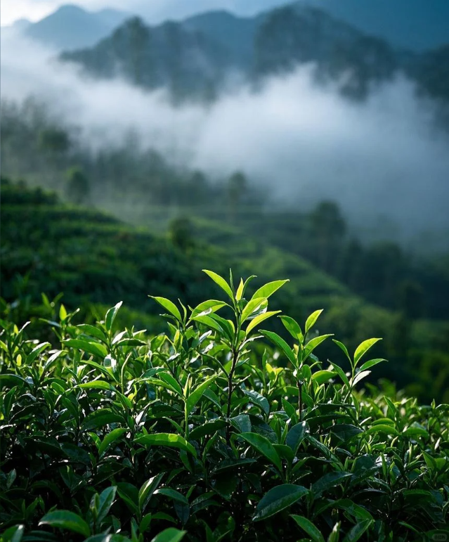
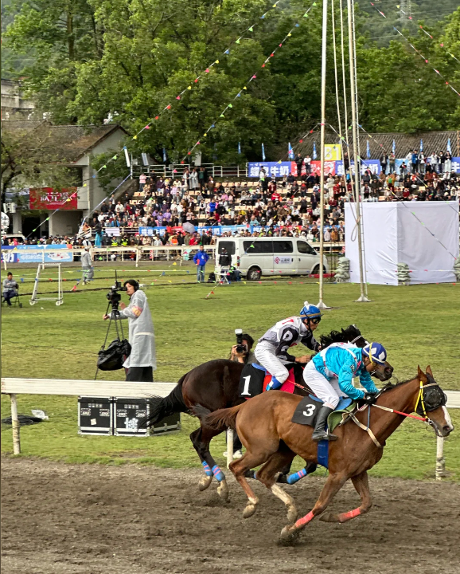
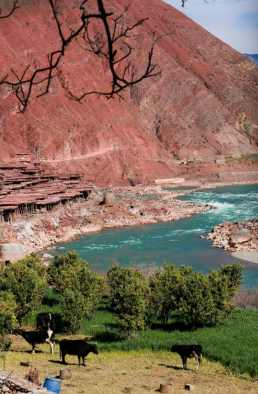
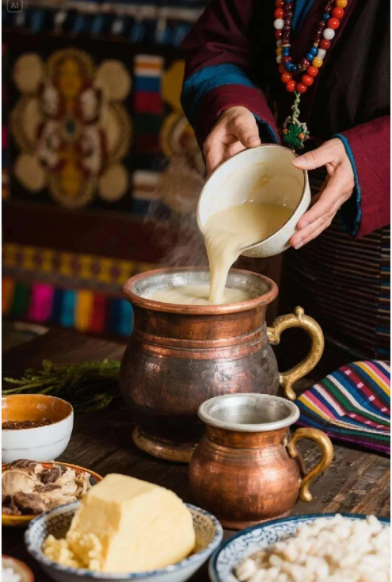
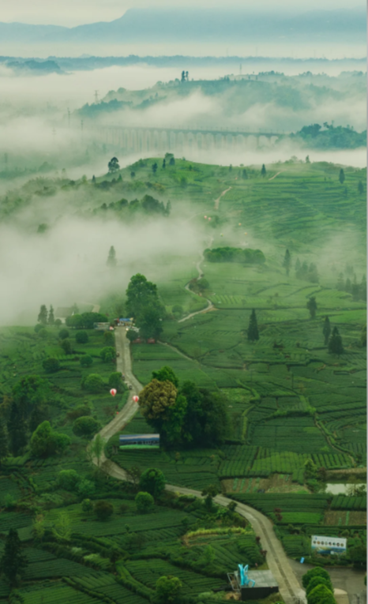
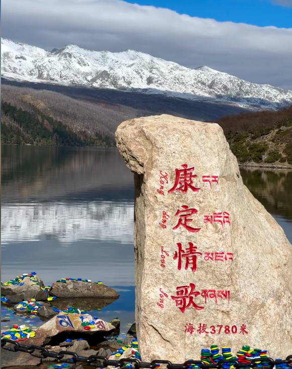
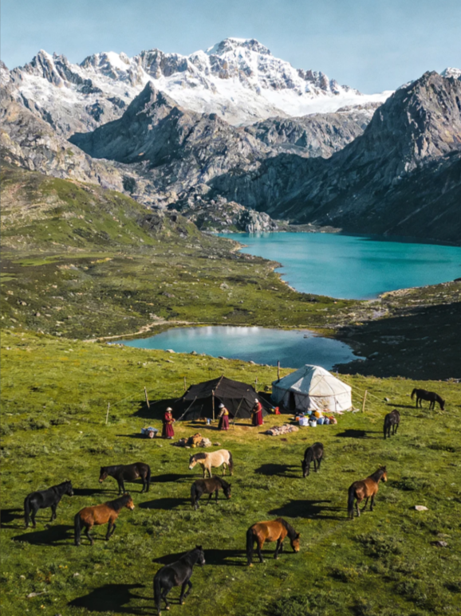
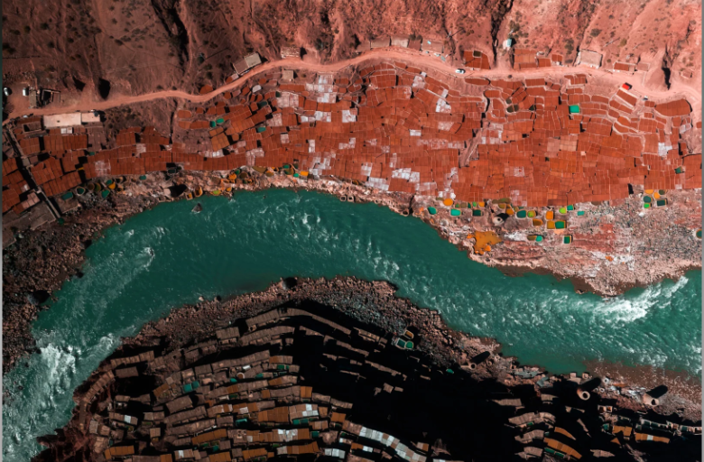

共同信仰内核
共奉——不同名字，同一个祈愿
汉/藏/白/纳西/彝共奉马王、罗哥、山神、神驹——不同名字，同一个祈愿：马匹强健，路途平安。

茶马古道，这不仅是一条连接川滇藏、跨越横断山脉的商贸之路，更是中华民族共同体形成过程中的重要脉络。它以茶叶与马匹的交换为纽带，串联起了高原与平原，农耕与游牧。在这漫长的古道上，成千上万的马帮铃声回荡在峡谷之间，每一次脚步的迈进都是不同民族、不同文化深度交融的见证。它不仅是物质的流通，更是精神的共振与命运的绑定。
马，不止是负重的牲口，更是穿针引线的政治推手、连通生命的经济血脉、整合社会的移动平台、慰藉心灵的精神图腾、共享传承的文化符号。
探索茶马古道经济齿轮
点击地图上的地点、资源、民族或时间点
物资流动示意

茶之源：普洱茶的主产区，是马帮驮茶的起点。这里的茶叶经过压制成饼，便于在马背上长途跋涉。

马之源：大理马是宋代重要的军马来源。大理作为南诏、大理国的都城，是滇藏古道的关键转运点。
中转枢纽：丽江古城是茶马古道上最重要的中转站。木氏土司经营的马帮曾规模宏大，连接了康藏与内地。
藏区门户：进入藏区的咽喉，多民族商队在此集结，进行物资补给和人员调整。
滇藏咽喉：梅里雪山脚下，马帮进入西藏前的最后一站，地理环境极其险峻。

交汇之地：川滇藏三省交汇点，川藏线与滇藏线在此合流，是多民族文化的深度交融区。
藏东重镇：历史上重要的茶马互市中心，也是藏东政治、经济、文化的中心。

终点与归宿：茶叶最终抵达圣城拉萨，成为藏民日常生活的“生命之饮”。在这里，茶叶完成了从商品到文化符号的升华。

川茶主产区，雅安藏茶由此出发

历史上最大的茶马互市场所，汉藏贸易枢纽

高原牧区马匹输出地
丙察察线——多民族共生的险峻商道

大地的馈赠：盐井是茶马古道上极其珍贵的盐源。多民族共享这一资源，盐与茶的交换构成了古道贸易的重要一环。


神马信仰中的多民族心理共鸣


📖[1] 李旭. 马帮的信仰与崇拜[R]. 云南省社会科学院.
📖[2] 刘礼堂, 陈韬. 西南茶马古道：中华民族共同体意识的千年回响[J].
📖[3] 中国大百科全书. 马帮禁忌[Z].
📖[4] 刘炘. 中国马文化·神骏卷[M]. 甘肃文化出版社.
古道文化遗产中的多民族记忆共享